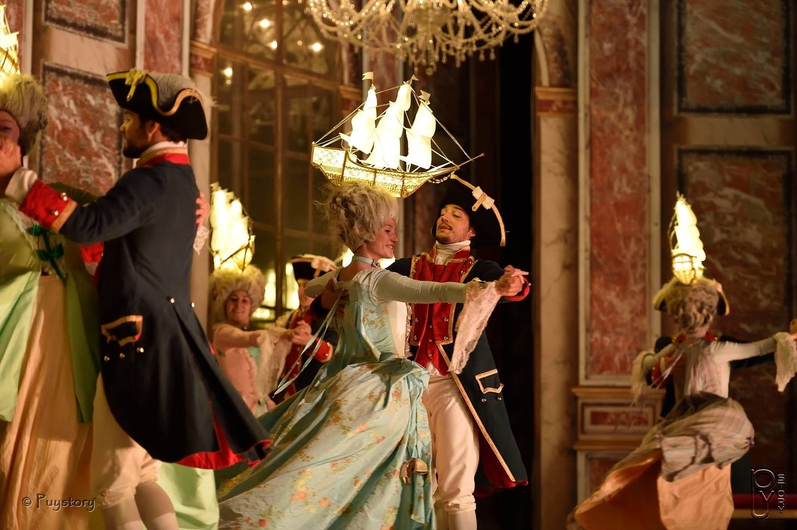
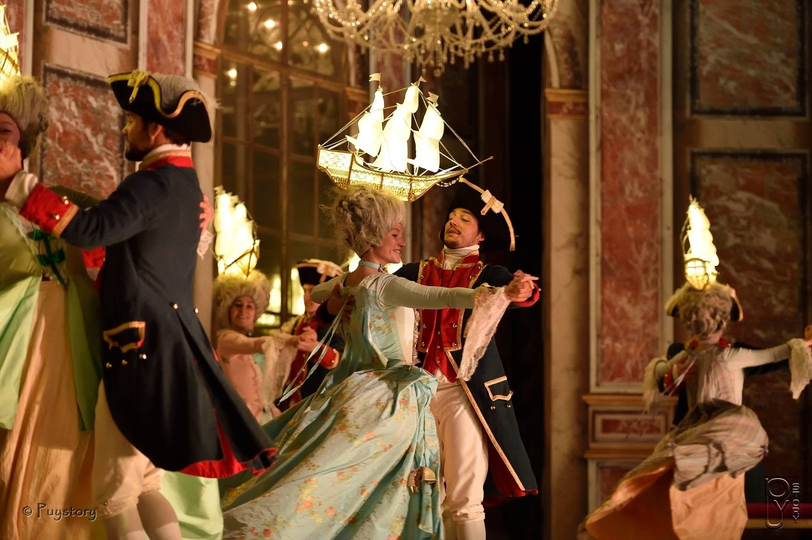
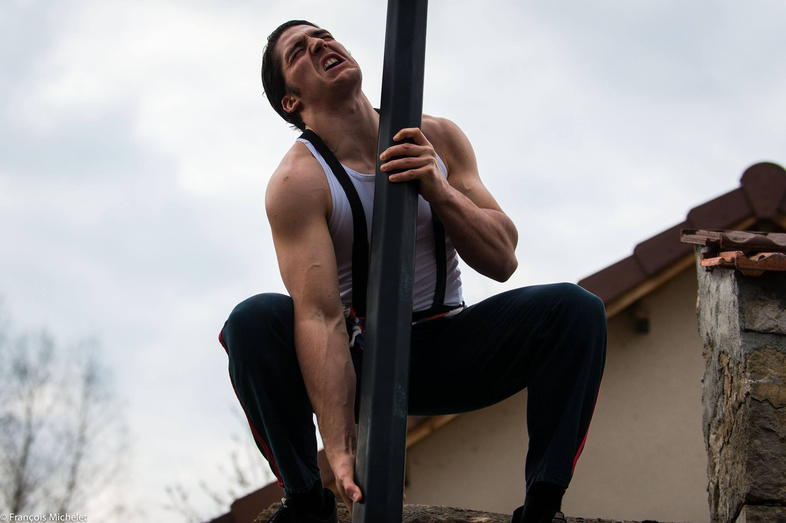
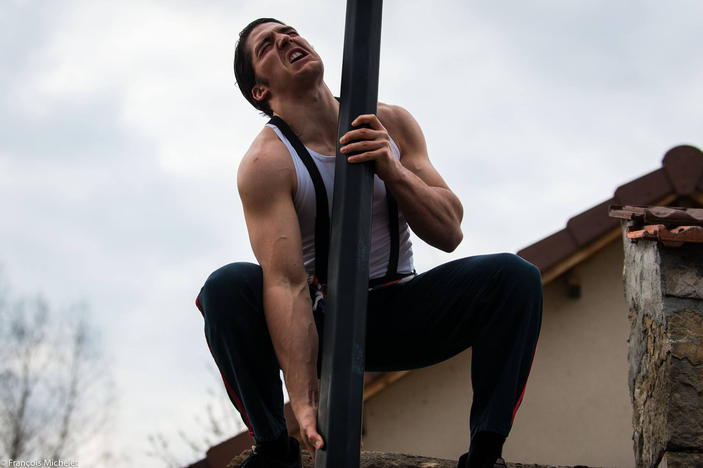
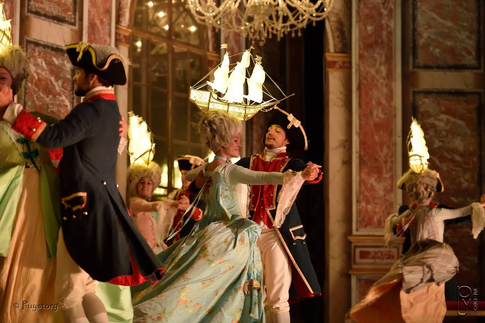
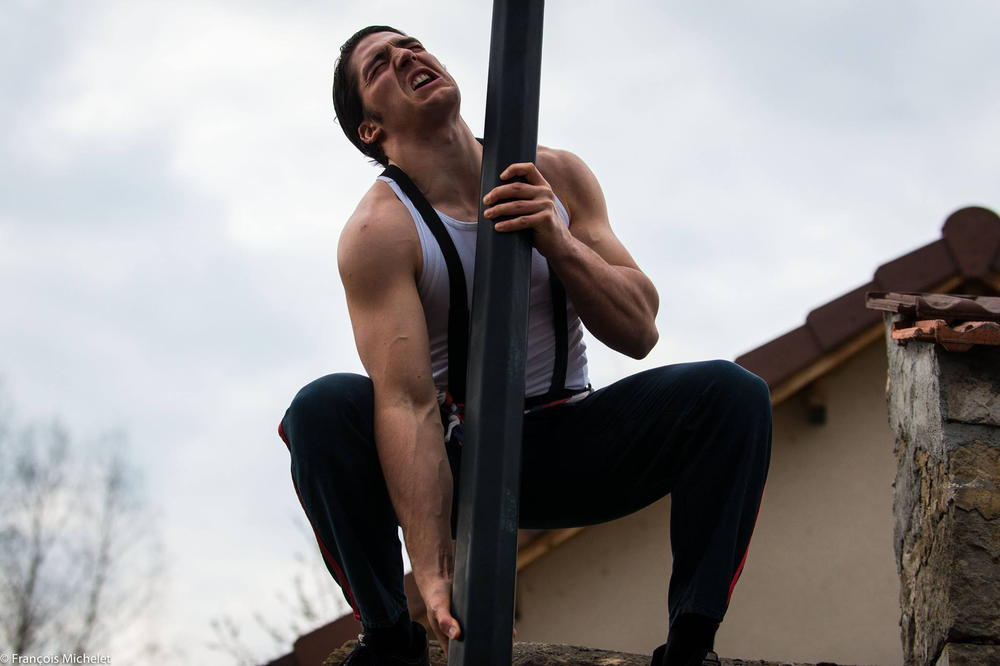

 

Doté d'une grande détermination depuis l'enfance, je me suis trouvé une passion grandissante pour le sport à l'âge de 16 ans, suivi par la découverte de la cascade et de l'acrobatie quelques années plus tard. Depuis je consacre toute ma vie à ces disciplines dans le but de servir la créativité et son partage sous bien des formes.
DECOUVRIRMa passion m'a dors et déjà emmenée aux quatres coins de la France et je ne compte pas en rester là! Je suis disponible quelque soit votre projet et lieu de tournage.
N'hésitez pas à me contacter, je suis joignable n'importe quand, hors tournage ou entrainement.


Aucun projet n'est absurde s'il y a un fou pour y croire !
Ma motivation et ma passion sont à votre service, je répondrais quelque soit votre message.